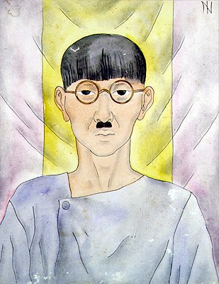

Doug Slaymaker, “Collecting France”

Dr. Doug Slaymaker is currently associate professor of Japanese at the University of Kentucky where he also serves as co-director of the Asia Center and as Director of the Division of Russian and Eastern Studies. His current research focuses on artists working outside of Japan during the early twentieth-century. The Body in Postwar Fiction: Japanese Fiction after the War was published by Routledge in 2004. He has edited several volumes, among them Confluences: Postwar Japan and France (University of Michigan Center for Japanese Studies, 2002), and Yoko Tawada: Voices from Everywhere. (Lexington Books, 2007).
Doug SLaymaker
Saturday, September 28, 2013
Doug Slaymaker, “Collecting France”
One can collect many things. But must they be concrete artifacts? The collector’s curio cabinet demonstrates knowledge and authority, acquisitions and good taste. Items in the collection are aesthetically pleasing; the collection itself maps a terrain; in combination they draw attention elsewhere, towards lineages, or accomplishments, or cultural identity, for example. They also draw attention to the collector. Most collections yield a catalog of physical items, such as paintings, books, curiosities, or ceramics. I will explore the more abstract collections of Japanese expatriates such as Fujita Tsuguharu, Ishiguro Keishichi, or Kaneko Mitsuharu amassing Paris, in the 1920s and 1930s who circulated their collections of images and impressions, ostensibly to inform a readership back home about the largely-inaccessible but greatly-desired France. These collections of France, in the form of essays and reminiscences, bring that France closer; they also catalog the privilege, authority, and personality of the collector. Further, and this is my interest here, these collections of memories and images re-present what it meant to be Japanese; they sketch the changing contours of “Japaneseness” in the world, in this era; and they provide a means for those readers back home to feel knowledgeable, part of, and therefore experienced of, the wider world. These collections of France are integral to the constitution of “Japan.”